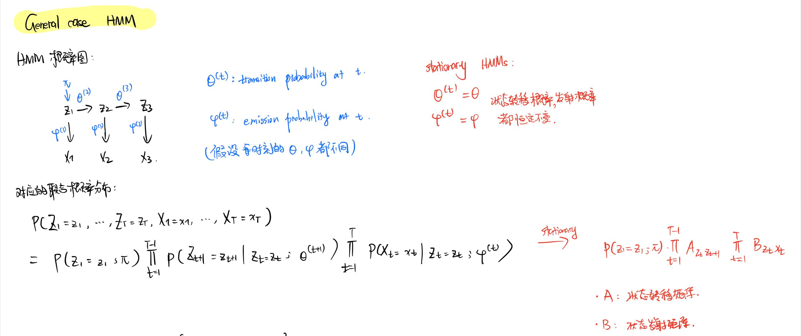
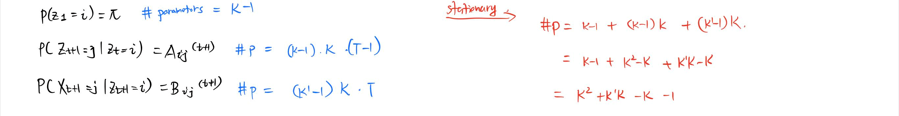
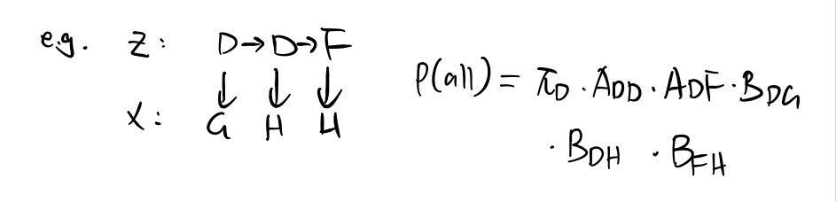
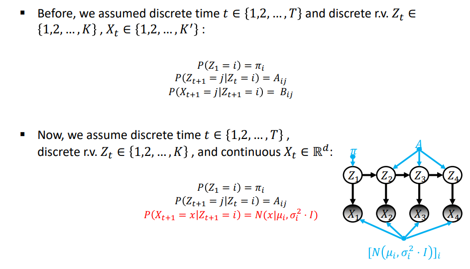
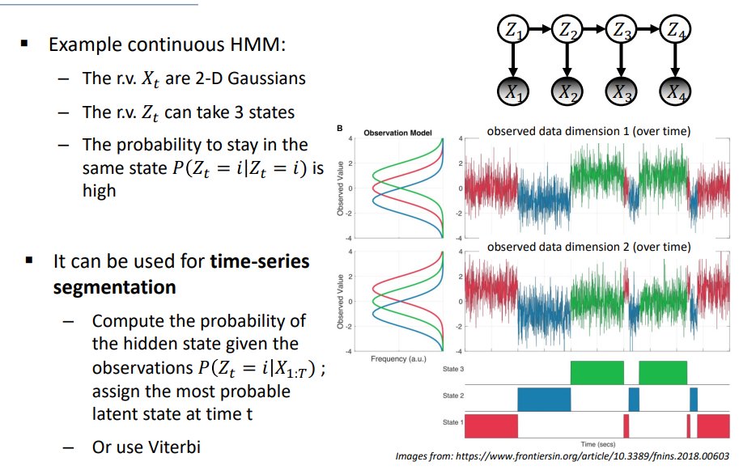

—> 引入hidden/latent states Zt, 使这些隐状态满足Markov Property, 但是observations不需要有Markov Property
(HMM)
Definition of HMM
A HMM由两个sequences组成:
a sequence of hidden/latent random variables [Z1,…,ZT]
a sequence of observed random variables [X1,…,XT]
such that: (HMM假设)
Z1,…,ZT satisfy the Markov property:
任意时刻的状态 (latent variables)只取决于前一时刻的状态
transition probabilities:
P(Zt+1∣Zt,Zt−1,…,Z1)=P(Zt+1∣Zt)
Xt depends only on Zt :
任意时刻的观测仅由该时刻的状态决定(先有状态,才有观测)
emission probabilities:
P(Xt+1∣Z1,…,ZT,X1,…,XT,)=P(Xt+1∣Zt+1)
(3). conventions:
time-steps: discrete t∈{1,2,…,T}
latent random variables: Zt∈{1,2,…,K}
observations: discrete/continuous
General case HMM

discrete observation case
i.e.
Zt∈{z1,⋯,zK}K个状态
Xt∈{x1,⋯,xK′}K′个可能的observations

example:

continuous observation case


Inference (i.e. Forward backward algorithm and MAP ) stays the same. The probability Pr(Xt∣Zt) is just computed with Normal distribution instead of Categorical distribution, i.e.: